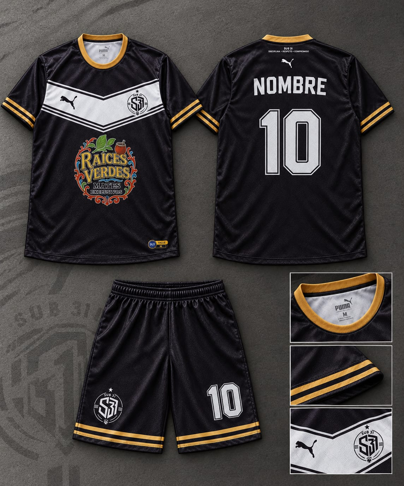
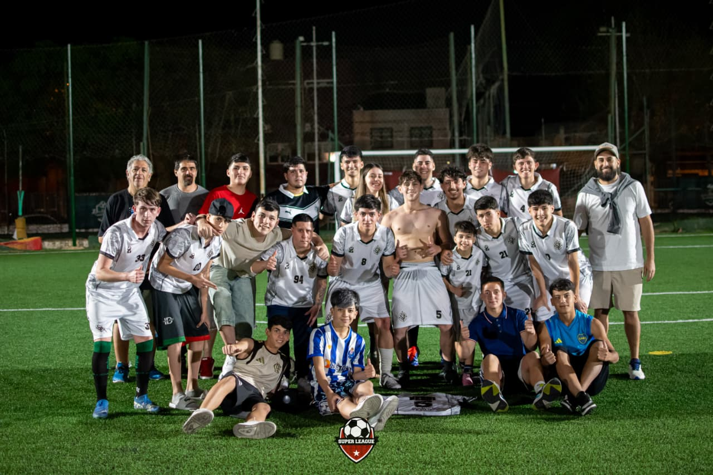
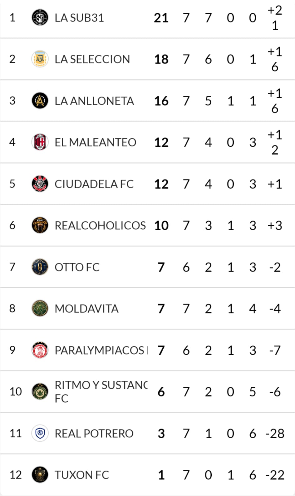
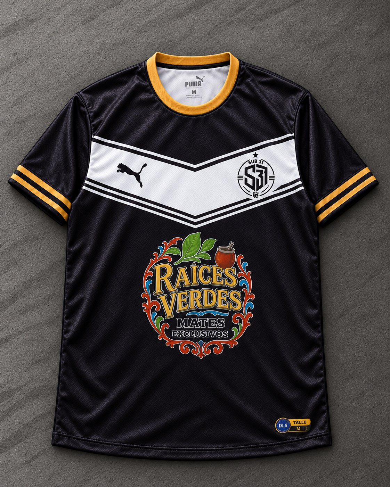
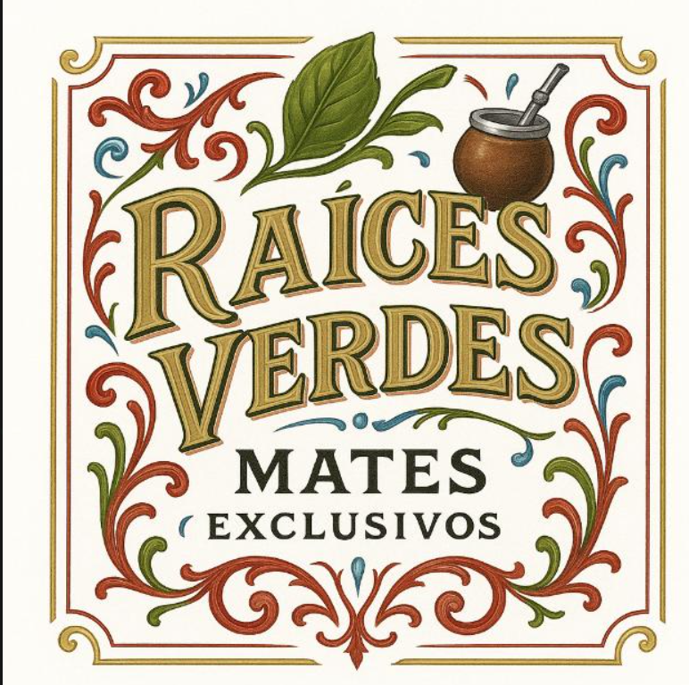

Disciplina
El compromiso empieza antes del partido. Estar presentes, dar lo mejor y trabajar por el equipo.
La Sub 31
Un escudo que nos representa.
Una pasión que se comparte.
Disciplina Respeto Compromiso

El club
La Sub 31 es una forma de encontrarnos alrededor del fútbol. Compartir la cancha, defender los mismos colores y sentir que somos parte de algo que construimos juntos.
El escudo nos identifica. La manera de entrenar, competir y acompañarnos le da sentido.
 Un escudo. Un equipo.
Un escudo. Un equipo.
El compromiso empieza antes del partido. Estar presentes, dar lo mejor y trabajar por el equipo.
Por nuestros compañeros, por el rival y por el juego. La forma de competir también nos representa.
Dentro y fuera de la cancha. Acompañarnos y defender lo que somos, en cada momento.
Nuestro equipo
La pasión toma forma en cada encuentro. El equipo, la camiseta y el orgullo de representar a La Sub 31.
Nuestra familia
La Sub 31 nació como un equipo de fútbol y creció como algo más grande. Acá no se comparte solo una cancha: se comparten los viajes, las previas, las victorias y también las derrotas.
Hay lugar para los que juegan, para los que alientan desde el alambrado y para los que acompañan desde afuera. Lo que nos une empieza en la cancha, pero no termina en el pitazo final.
Dan todo en cada partido y defienden nuestros colores con orgullo.
Siguen al equipo en cada cancha y hacen sentir el aguante.
Familias y amigos que sostienen el club dentro y fuera de la cancha.

La Sub 31 en cancha
Seguí el calendario del equipo: rivales, fechas, horarios y canchas, todo en un mismo lugar.
No hay próximos partidos publicados.
Las fechas, horarios y canchas aparecerán aquí cuando estén confirmados.Todos los partidos se disputan en La Maderera, Ramos Mejía. Horarios por confirmar.
Tabla de posiciones
La Sub 31 lidera la tabla con 21 puntos después de siete partidos. Siete jugados, siete ganados.
1.º21 puntos · 7 PJ
Ver tabla en tamaño completo (abre en otra pestaña)
Nuestra competencia
Conocé la competencia en la que participa La Sub 31, su formato y cómo seguirla.
Conocer el torneoLos detalles de la competencia se publicarán aquí próximamente.
Nuestras camisetas
Negro, blanco y dorado. Dos conjuntos, el mismo escudo y una manera de representar a La Sub 31.
La franja blanca en V, los detalles dorados y el escudo sobre una base negra. Una camiseta con carácter.
Consultanos por las camisetas
Nuestros patrocinadores
Gracias a las marcas que acompañan a La Sub 31 y son parte de nuestro camino.

Mates exclusivos

Soluciones digitales
Tu marca también puede ser parte
Acercanos tu propuesta y conversemos sobre cómo acompañar al club.
Nuestra comunidad
Las novedades, los videos y el día a día de La Sub 31. Encontranos en nuestras redes y compartí la pasión.
Hablemos
¿Querés acercarte al club, consultar por las camisetas o proponernos una colaboración? Escribinos por Instagram.
Contactar al clubEn nuestras cuentas de Instagram, TikTok y YouTube. En la sección de comunidad tenés los enlaces directos a cada una.
Mandanos un mensaje a @lasub31_ en Instagram. Por ese canal podés acercarnos tus consultas o propuestas.
Explorá los diseños de frente, dorso, short y conjunto en esta página y escribinos por Instagram para consultar por la camiseta que te interesa.